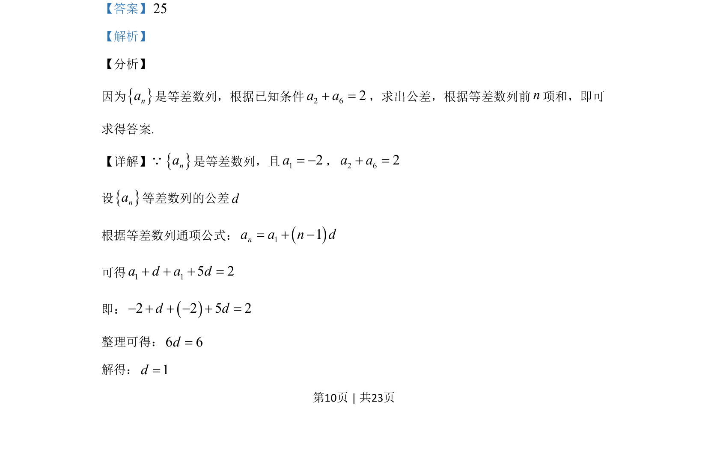
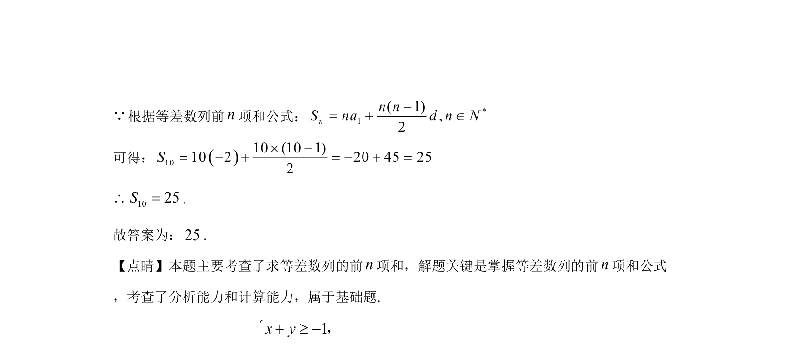

考点：等差数列通项公式 等差数列前n项和 方程求解
该题考查等差数列通项公式与前n项和公式的应用，通过已知条件求公差并计算前10项和。


📄 原 PDF 第 10 页：
素材/真题/吉林/2008-2024·（吉林）数学高考真题/2020年高考数学试卷（文）（新课标Ⅱ）（解析卷）.pdf
14.记nS为等差数列na的前n项和．若1 2 62, 2a a a= - + =，则10S=____．
【答案】25 【解析】 【分析】 因为na是等差数列，根据已知条件2 62a a+ =，求出公差，根据等差数列前n项和，即可 求得答案. 【详解】Qna是等差数列，且12a= -，2 62a a+ = 设na等差数列的公差d 根据等差数列通项公式：11na a n d+ -= 可得1 15 2a d a d+ + + = 即：2 2 5 2d d- + + - + = 整理可得：6 6d= 解得：1d=